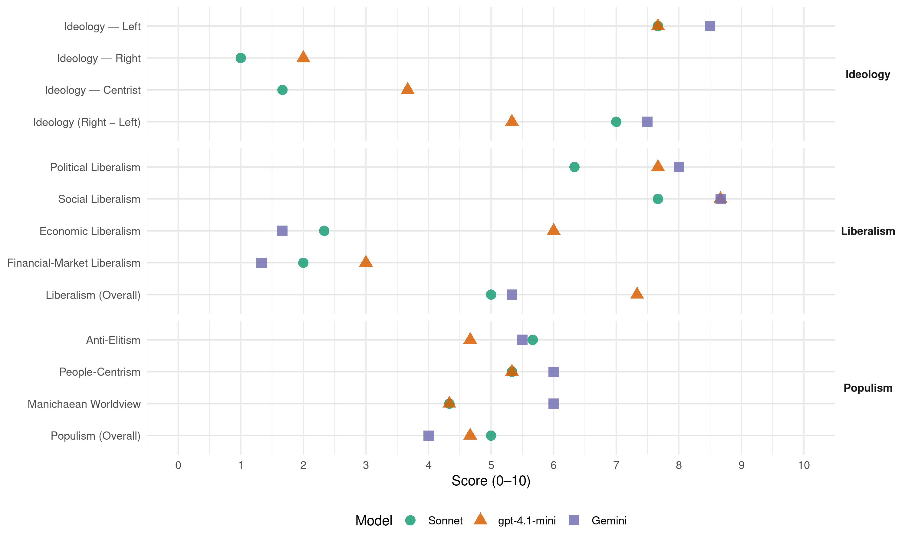

SV (Norway, 1985)
manifesto_id 12221_198509
Get full text: This site shows derived annotations and short verbatim quotes only. The full manifesto text is © Manifesto Project / WZB — obtain it via manifesto-project.wzb.eu using the manifesto_id above.
Headline scores
| Dimension | Sonnet | gpt-4.1-mini | Gemini |
|---|---|---|---|
| Populism (Overall) | 5.0 | 4.7 | 4.0 |
| Anti-Elitism | 5.7 | 4.7 | 5.5 |
| People-Centrism | 5.3 | 5.3 | 6.0 |
| Manichaean Worldview | 4.3 | 4.3 | 6.0 |
| Ideology (Right − Left) | 7.0 | 5.3 | 7.5 |
| Liberalism (Overall) | 5.0 | 7.3 | 5.3 |
| Political Liberalism | 6.3 | 7.7 | 8.0 |
| Social Liberalism | 7.7 | 8.7 | 8.7 |
| Economic Liberalism | 2.3 | 6.0 | 1.7 |
| Financial-Market Liberalism | 2.0 | 3.0 | 1.3 |
Evidence per dimension
Economic Liberalism
Gemini · score 1.0 · verified · chunk 1
“erstatte kapitalismen med et sosialistisk samfunn”
Norges grenser. SV vil erstatte kapitalismen med et sosialistisk samfunn der alle mennesker tar del i viktige beslutninger
Gemini · score 1.0 · verified · chunk 2
“avskaffe private leiegårder uten at inngangsbilletten”
dårligere og dyrere tilbud. SV vil avskaffe private leiegårder uten at inngangsbilletten til boligene mangedobles.
Gemini · score 3.0 · verified · chunk 3
“flernasjonale selskapenes dominans - U-landas”
teknisk kunnskap for u-land - Nedbryting av de flernasjonale selskapenes dominans - U-landas rett til nasjonalisering - Mer innflytelse
gpt-4.1-mini · score 4.0 · verified · chunk 1
“SV går inn for at vi bruker de store oljeinntektene til å bygge ut fellesgodene i samfunnet”
Målet for SV’s økonomiske politikk er å skaffe lønnet arbeid til alle som ønsker det, få en jevnere fordeling av arbeid og inntekt, utnytte landets ressurser effektivt og verne om miljøet. SV går inn for at vi bruker de store oljeinntektene til å bygge ut fellesgodene i samfunnet.
gpt-4.1-mini · score 7.0 · verified · chunk 2
“SV går inn for at Husbanken gir høyere, flere og billigere lån”
Målet for SVs boligpolitikk er trygge og stabile bomiljøer. Alle må kunne skaffe seg en god bolig til en rimelig pris. Boligen bør ikke være et middel til å øke den private formuen, men et sted som gir trygghet og tilhørighet. Dagens boligpolitikk fører til oppsplittede bomiljøer. Boutgiftene er så høye at mange ikke klarer dem og må ty til sosialkontoret. SV går inn for en kraftig økning i boligbyggingen. Vi vil gjenreise den sosiale boligpolitikk ved: - At Husbanken gir høyere, flere og billigere lån.
gpt-4.1-mini · score 7.0 · verified · chunk 3
“Øke handelen med u-landa ved å fjerne hindringer for import”
Norge bør: - Øke handelen med u-landa ved å fjerne hindringer for import av både bearbeidede varer og råvarer - Støtte oppbyggingen av nasjonale handelsflåter i u-landa og u-landas krav om å få frakte en større andel av sin utenrikshandel på egne skip
Sonnet · score 1.0 · verified · chunk 1
“erstatte kapitalismen med et sosialistisk samfunn”
SV vil erstatte kapitalismen med et sosialistisk samfunn der alle mennesker tar del i viktige beslutninger gjennom folkestyre sentralt og lokalt.
Sonnet · score 2.0 · verified · chunk 2
“Helsevesenet må ikke bli et marked”
10.4: Erfaringene fra andre land tilsier at skjevhetene blir større dersom «markedskreftene» slippes løs. Helsevesenet må ikke bli et marked for kjøp og salg.
Sonnet · score 4.0 · verified · chunk 3
“Lettere adgang for u-landa til i-landas markeder”
SV mener at Norge selv må følge opp disse retningslinjene i praktisk politikk. - Lettere adgang for u-landa til i-landas markeder
Financial-Market Liberalism
Gemini · score 1.0 · verified · chunk 1
“Staten overtar de store bankene og forsikringsselskapene”
For å utvide det økonomiske demokratiet vil SV at: - Staten overtar de store bankene og forsikringsselskapene, oljevirksomheten og enkelte nøkkelindustrier
Gemini · score 1.0 · verified · chunk 2
“Husbanken gir høyere, flere og billigere lån”
sosiale boligpolitikk ved: - At Husbanken gir høyere, flere og billigere lån. Lånene bør dekke 75 80 %
Gemini · score 2.0 · verified · chunk 3
“internasjonale finansinstitusjoner, slik som Pengefondet”
u-landa - Mer innflytelse for u-landa i internasjonale finansinstitusjoner, slik som Pengefondet (lMF) og Verdensbanken - Lettere kredittforhold
gpt-4.1-mini · score 3.0 · verified · chunk 1
“Staten overtar de landsomfattende bankene og forsikringsselskapene. Staten overtar de landsomfattende bankene og forsikringsselskapene”
SV går derfor inn for: - Aktiv bruk av penge- og kredittloven for å styre banker og kredittinstitusjoner - Å avskaffe det grå pengemarkedet - Samfunnsmessig overtakelse av bank- og kredittvesenet. Staten overtar de landsomfattende bankene og forsikringsselskapene. - Distriktsforretningsbankene omgjøres til stiftelser med samme styreform som sparebankene.
Sonnet · score 1.0 · verified · chunk 1
“Samfunnsmessig overtakelse av bank- og kredittvesenet”
SV går derfor inn for: Aktiv bruk av penge- og kredittloven for å styre banker og kredittinstitusjoner. Samfunnsmessig overtakelse av bank- og kredittvesenet. Staten overtar de landsomfattende bankene og forsikringsselskapene.
Sonnet · score 2.0 · verified · chunk 2
“hindre at bank og forsikring får dominere”
6.8: Begrense kontorisering av boliger og industrianlegg og hindre at bank og forsikring får dominere sentrumsbebyggelsen.
Sonnet · score 3.0 · verified · chunk 3
“Mer innflytelse for u-landa i internasjonale finansinstitusjoner”
Dette innebærer: - Mer innflytelse for u-landa i internasjonale finansinstitusjoner, slik som Pengefondet (IMF) og Verdensbanken - Lettere kredittforhold for u-land
Political Liberalism
Gemini · score 8.0 · verified · chunk 1
“bygger på verdien av flerpartisystem og demokratiske rettigheter”
SV ’s sosialisme gir rom for åpenhet og mangfold og bygger på verdien av flerpartisystem og demokratiske rettigheter. I SV ’s grunnsyn er forståelsen
Gemini · score 8.0 · verified · chunk 2
“kriminalpolitikken ikke bidrar til å undergrave rettsstatsprinsippet”
13.5 Forsvar av rettsstaten SV ser det som særlig viktig at kriminalpolitikken ikke bidrar til å undergrave rettsstatsprinsippet. SV går derfor inn for at:
Gemini · score 8.0 · verified · chunk 3
“undergrave rettsstatsprinsippet. SV går derfor”
særlig viktig at kriminalpolitikken ikke bidrar til å undergrave rettsstatsprinsippet. SV går derfor inn for at: - Kontrollen med de særlige
gpt-4.1-mini · score 7.0 · verified · chunk 1
“SV legger stor vekt på kampen for likestilling og kvinnefrigjøring. SV bygger på de «grønne» verdier og de erkjennelser økologien er kommet fram til”
SV er en del av den marxistiske tradisjonen i arbeiderbevegelsen og vil videreføre og videreutvikle denne tradisjonen. Marxismen er ikke ferdig utviklet en gang for alle. Den må tilføres erfaringer og lærdommer både fra vårt eget og andre land. SV ’s sosialisme gir rom for åpenhet og mangfold og bygger på verdien av flerpartisystem og demokratiske rettigheter. SV legger stor vekt på kampen for likestilling og kvinnefrigjøring. SV bygger på de «grønne» verdier og de erkjennelser økologien er kommet fram til.
gpt-4.1-mini · score 8.0 · verified · chunk 2
“Alle skal ha rett til å gå til en fast lege og til selv å velge lege på sitt hjemsted eller arbeidssted”
Leger, tannleger og andre helsearbeidere skal ansettes av det offentlige med fast lønn og regulert arbeidstid. Dermed spares store driftstilskudd til privatpraktiserende helsearbeidere - Import og omsetning av legemidler og hjelpemidler for funksjonshemmete bør være et offentlig ansvar - Bedre landsdelsdekning av spesialister ved legebeordringslov - Alle skal ha rett til å gå til en fast lege og til selv å velge lege på sitt hjemsted eller arbeidssted. Bruk av spesialist/spesialavdelinger skal skje etter henvisning fra allmennpraktiserende lege når det ikke dreier seg om øyeblikkelig hjelp.
gpt-4.1-mini · score 8.0 · verified · chunk 3
“fri rettshjelp styrkes vesentlig”
Ordningen med fri rettshjelp styrkes vesentlig. Inntektsgrensene for å komme inn under ordningen, må heves. Det må dessuten bli tatt hensyn til forsørgelsesbyrde. Egenandelene må reduseres - Etterforskning/tiltale mot politiet legges til egne organer - Ventetida ved domsstolene forkortes
Sonnet · score 6.0 · verified · chunk 1
“ytringsfrihet, frie valg og allmenn stemmerett”
I et politisk demokrati som Norge, tar flertallet avgjørelser som angår fellesskapet på grunnlag av ytringsfrihet, frie valg og allmenn stemmerett. Disse demokratiske rettighetene er grunnelementer i et hvert demokrati.
Sonnet · score 6.0 · verified · chunk 2
“Overvåking av lovlig politisk virksomhet opphører”
13.5 Forsvar av rettsstaten: SV går inn for at… Overvåking av lovlig politisk virksomhet opphører. Etterforskning/tiltale mot politiet legges til egne organer.
Sonnet · score 7.0 · verified · chunk 3
“demokratisk kontroll”
Det er også viktig å sikre at forsvaret til enhver tid er under betryggende demokratisk kontroll. SV vil: - At den militære etterretningstjeneste skal underlegges parlamentarisk kontroll
Liberalism (Overall)
Gemini · score 5.0 · verified · chunk 1
“bygger på verdien av flerpartisystem og demokratiske rettigheter”
SV ’s sosialisme gir rom for åpenhet og mangfold og bygger på verdien av flerpartisystem og demokratiske rettigheter. I SV ’s grunnsyn er forståelsen
Gemini · score 5.0 · verified · chunk 2
“kriminalpolitikken ikke bidrar til å undergrave rettsstatsprinsippet”
13.5 Forsvar av rettsstaten SV ser det som særlig viktig at kriminalpolitikken ikke bidrar til å undergrave rettsstatsprinsippet. SV går derfor inn for at:
Gemini · score 6.0 · verified · chunk 3
“undergrave rettsstatsprinsippet. SV går derfor”
særlig viktig at kriminalpolitikken ikke bidrar til å undergrave rettsstatsprinsippet. SV går derfor inn for at: - Kontrollen med de særlige
gpt-4.1-mini · score 6.0 · verified · chunk 1
“SV legger stor vekt på kampen for likestilling og kvinnefrigjøring. SV går inn for at vi bruker de store oljeinntektene til å bygge ut fellesgodene”
SV legger stor vekt på kampen for likestilling og kvinnefrigjøring. SV bygger på de «grønne» verdier og de erkjennelser økologien er kommet fram til. Vi har ansvar også for kommende generasjoner. SV går inn for at vi bruker de store oljeinntektene til å bygge ut fellesgodene i samfunnet.
gpt-4.1-mini · score 8.0 · verified · chunk 2
“Alle skal ha rett til å gå til en fast lege og til selv å velge lege på sitt hjemsted eller arbeidssted”
Leger, tannleger og andre helsearbeidere skal ansettes av det offentlige med fast lønn og regulert arbeidstid. Dermed spares store driftstilskudd til privatpraktiserende helsearbeidere - Import og omsetning av legemidler og hjelpemidler for funksjonshemmete bør være et offentlig ansvar - Bedre landsdelsdekning av spesialister ved legebeordringslov - Alle skal ha rett til å gå til en fast lege og til selv å velge lege på sitt hjemsted eller arbeidssted. Bruk av spesialist/spesialavdelinger skal skje etter henvisning fra allmennpraktiserende lege når det ikke dreier seg om øyeblikkelig hjelp.
gpt-4.1-mini · score 8.0 · verified · chunk 3
“fri rettshjelp styrkes vesentlig”
Ordningen med fri rettshjelp styrkes vesentlig. Inntektsgrensene for å komme inn under ordningen, må heves. Det må dessuten bli tatt hensyn til forsørgelsesbyrde. Egenandelene må reduseres - Etterforskning/tiltale mot politiet legges til egne organer - Ventetida ved domsstolene forkortes
Sonnet · score 4.0 · verified · chunk 1
“Streng kontroll med valutabevegelsene”
Streng kontroll med valutabevegelsene for å kunne føre en nasjonalt bestemt penge- og kredittpolitikk.
Sonnet · score 5.0 · mixed · chunk 2
“Staten skal være verdslig og livssynsnøytral”
12.14 Livssyn: Staten skal være verdslig og livssynsnøytral. Intet livssyn eller trossamfunn skal diskrimineres eller få fordeler.
Sonnet · score 6.0 · verified · chunk 3
“Kamp mot rasisme”
14.2 Kamp mot rasisme For SV er det en overordnet oppgave å slåss mot rasisme. Innvandrere fra den tredje verden møter rasistiske holdninger og diskriminering daglig.
Anti-Elitism
Gemini · score 7.0 · verified · chunk 1
“på parti med de uten makt mot maktmennesker i politikk og økonomi”
I konflikter stiller vi oss på de fattiges side mot de rike, på de undertryktes side mot undertrykkerne, på parti med de uten makt mot maktmennesker i politikk og økonomi. 2. DEMOKRATI OG FOLKESTYRE
Gemini · score 4.0 · verified · chunk 2
“skole som fremmer egoisme, karakterjag og ulikhet”
Konservative krefter arbeider for en skole som fremmer egoisme, karakterjag og ulikhet. Utdanning og forskning
gpt-4.1-mini · score 8.0 · verified · chunk 1
“I konflikter stiller vi oss på de fattiges side mot de rike”
Som et sosialistisk parti vil SV alltid støtte de som rammes av urett. I konflikter stiller vi oss på de fattiges side mot de rike, på de undertryktes side mot undertrykkerne, på parti med de uten makt mot maktmennesker i politikk og økonomi.
gpt-4.1-mini · score 4.0 · verified · chunk 2
“Det kapitalistiske samfunnet skaper store sosiale og helsemessige problemer”
Helse- og sosialtjenestene ha høy standard over hele landet. Vi må alle bidra til dette, enten vi bruker helsetjenestene ofte eller sjelden. Helsevesenet må finansieres av det offentlige. Det kapitalistiske samfunnet skaper store sosiale og helsemessige problemer. Den økende arbeidsledigheten, de høye boutgiftene, miljøforurensingen og svekkingen av lokalsamfunnene fører til helseskader og sosiale problemer. Helse- og sosialpolitiske vurderinger må derfor ligge til grunn for politikken på alle samfunnsområder.
gpt-4.1-mini · score 2.0 · verified · chunk 3
“myndighetenes politikk på mange områder innebærer diskriminering”
lnnvandrere fra den tredje verden møter rasistiske holdninger og diskriminering daglig. Spesielt alvorlig er det at myndighetenes politikk på mange områder innebærer diskriminering av innvandrere fra den tredje verden. SV går derfor inn for at:
Sonnet · score 8.0 · verified · chunk 1
“Det kapitalistiske systemet fører til konsentrasjon av makt”
SV vil erstatte kapitalismen med et sosialistisk samfunn der alle mennesker tar del i viktige beslutninger gjennom folkestyre sentralt og lokalt.
Sonnet · score 4.0 · verified · chunk 2
“Konservative krefter arbeider for en skole”
11.1 Innledning: Konservative krefter arbeider for en skole som fremmer egoisme, karakterjag og ulikhet. Utdanning og forskning søkes tilpasset markedets behov ikke samfunnets.
Sonnet · score 5.0 · verified · chunk 3
“Nedbryting av de flernasjonale selskapernes dominans”
SV støtter krav fra u-landa som kan fremme en rettferdig økonomisk verdensordning. Dette innebærer: - Nedbryting av de flernasjonale selskapenes dominans
Ideology — Centrist
gpt-4.1-mini · score 3.0 · verified · chunk 1
“SV vil arbeide for økt folkelig innflytelse på samfunnsutviklingen. Demokratiske reformer under kapitalismen må peke fremover”
SV vil bekjempe fåmannsvelde og maktkonsentrasjon og arbeide for økt folkelig innflytelse på samfunnsutviklingen. Demokratiske reformer under kapitalismen må peke fremover mot et sosialistisk samfunn.
gpt-4.1-mini · score 3.0 · verified · chunk 2
“Alle må kunne skaffe seg en god bolig til en rimelig pris”
Målet for SVs boligpolitikk er trygge og stabile bomiljøer. Alle må kunne skaffe seg en god bolig til en rimelig pris. Boligen bør ikke være et middel til å øke den private formuen, men et sted som gir trygghet og tilhørighet. Dagens boligpolitikk fører til oppsplittede bomiljøer.
gpt-4.1-mini · score 5.0 · verified · chunk 3
“folk tar ansvar også for sine naboer og andre medmennesker”
SV mener at det viktigste vern mot voldskriminalitet er et solidarisk samfunn hvor folk tar ansvar også for sine naboer og andre medmennesker. Dessuten mener SV at:
Sonnet · score 1.0 · verified · chunk 1
“økt folkelig innflytelse på samfunnsutviklingen”
SV vil bekjempe fåmannsvelde og maktkonsentrasjon og arbeide for økt folkelig innflytelse på samfunnsutviklingen.
Sonnet · score 2.0 · verified · chunk 2
“Alle må kunne skaffe seg en god bolig”
6.6 Boligfinansiering: Alle må kunne skaffe seg en god bolig til en rimelig pris. Boligen bør ikke være et middel til å øke den private formuen.
Sonnet · score 2.0 · verified · chunk 3
“et solidarisk samfunn hvor folk tar ansvar”
SV mener at det viktigste vern mot voldskriminalitet er et solidarisk samfunn hvor folk tar ansvar også for sine naboer og andre medmennesker.
Ideology — Left
Gemini · score 9.0 · verified · chunk 1
“SV ’s mål er å skape et sosialistisk demokrati i Norge”
1. INNLEDNING 1.1 Sosialisme og demokrati SV ’s mål er å skape et sosialistisk demokrati i Norge. Vi arbeider for et samfunn der alle
Gemini · score 8.0 · verified · chunk 2
“sosialistisk skolepolitikk innebærer opplæring til solidaritet”
markedets behov ikke samfunnets. Alle har ikke lik mulighet til å ta utdanning. En sosialistisk skolepolitikk innebærer opplæring til solidaritet og samfunnsansvar.
gpt-4.1-mini · score 9.0 · verified · chunk 1
“SV arbeider for utjamning av levekår. Skattepolitikken, boligpolitikken og sosialpolitikken må sikre større rettferdighet”
SV mener at alle mennesker er likeverdige. De store forskjellene vi fortsatt har mellom ulike grupper i det norske samfunnet, strir mot tanken om at vi alle har samme verdi. SV arbeider derfor for utjamning av levekår. Skattepolitikken, boligpolitikken og sosialpolitikken må sikre større rettferdighet og en jevnere fordeling av godene.
gpt-4.1-mini · score 7.0 · verified · chunk 2
“SV går inn for at Husbanken gir høyere, flere og billigere lån”
Målet for SVs boligpolitikk er trygge og stabile bomiljøer. Alle må kunne skaffe seg en god bolig til en rimelig pris. Boligen bør ikke være et middel til å øke den private formuen, men et sted som gir trygghet og tilhørighet. Dagens boligpolitikk fører til oppsplittede bomiljøer. Boutgiftene er så høye at mange ikke klarer dem og må ty til sosialkontoret. SV går inn for en kraftig økning i boligbyggingen. Vi vil gjenreise den sosiale boligpolitikk ved: - At Husbanken gir høyere, flere og billigere lån.
gpt-4.1-mini · score 7.0 · verified · chunk 3
“Bekjempe ungdomsarbeidsløsheten som er en hovedårsak til den økte ungdomskriminaliteten”
Det viktigste samfunnet kan gjøre for å redusere kriminaliteten, er derfor forebyggende arbeid. SV vil: - Bekjempe ungdomsarbeidsløsheten som er en hovedårsak til den økte ungdomskriminaliteten - Gi økte ressurser til barnevernsetaten for å gi vanskeligstilte barn en bedre oppvekst - Utvide det frivillige behandlingstilbud for stoffmisbrukere vesentlig
Sonnet · score 9.0 · verified · chunk 1
“Staten overtar de store bankene og forsikringsselskapene”
For å utvide det økonomiske demokratiet vil SV at: Staten overtar de store bankene og forsikringsselskapene, oljevirksomheten og enkelte nøkkelindustrier.
Sonnet · score 7.0 · verified · chunk 2
“SV vil avskaffe private leiegårder”
6.5 Leiegårder: SV vil avskaffe private leiegårder uten at inngangsbilletten til boligene mangedobles. SV vil samtidig arbeide for å styrke leieboernes stilling.
Sonnet · score 7.0 · verified · chunk 3
“kamp for økonomisk demokrati i Vest-Europa”
Støtte kampen for arbeid og økonomisk demokrati i Vest-Europa. SV vil utvikle kontakt og samarbeid med bevegelser og partier i vest-europeiske land
Ideology (Right − Left)
Gemini · score 8.0 · verified · chunk 1
“SV ’s mål er å skape et sosialistisk demokrati i Norge”
1. INNLEDNING 1.1 Sosialisme og demokrati SV ’s mål er å skape et sosialistisk demokrati i Norge. Vi arbeider for et samfunn der alle
Gemini · score 7.0 · verified · chunk 2
“sosialistisk skolepolitikk innebærer opplæring til solidaritet”
markedets behov ikke samfunnets. Alle har ikke lik mulighet til å ta utdanning. En sosialistisk skolepolitikk innebærer opplæring til solidaritet og samfunnsansvar.
gpt-4.1-mini · score 7.0 · verified · chunk 1
“SV arbeider for utjamning av levekår. Skattepolitikken, boligpolitikken og sosialpolitikken må sikre større rettferdighet”
SV mener at alle mennesker er likeverdige. De store forskjellene vi fortsatt har mellom ulike grupper i det norske samfunnet, strir mot tanken om at vi alle har samme verdi. SV arbeider derfor for utjamning av levekår. Skattepolitikken, boligpolitikken og sosialpolitikken må sikre større rettferdighet og en jevnere fordeling av godene.
gpt-4.1-mini · score 4.0 · verified · chunk 2
“Det kapitalistiske samfunnet skaper store sosiale og helsemessige problemer”
Helse- og sosialtjenestene ha høy standard over hele landet. Vi må alle bidra til dette, enten vi bruker helsetjenestene ofte eller sjelden. Helsevesenet må finansieres av det offentlige. Det kapitalistiske samfunnet skaper store sosiale og helsemessige problemer. Den økende arbeidsledigheten, de høye boutgiftene, miljøforurensingen og svekkingen av lokalsamfunnene fører til helseskader og sosiale problemer. Helse- og sosialpolitiske vurderinger må derfor ligge til grunn for politikken på alle samfunnsområder.
gpt-4.1-mini · score 5.0 · verified · chunk 3
“myndighetenes politikk på mange områder innebærer diskriminering”
lnnvandrere fra den tredje verden møter rasistiske holdninger og diskriminering daglig. Spesielt alvorlig er det at myndighetenes politikk på mange områder innebærer diskriminering av innvandrere fra den tredje verden. SV går derfor inn for at:
Sonnet · score 9.0 · verified · chunk 1
“avskaffe dagens kapitalistiske system”
SV arbeider for å avskaffe dagens kapitalistiske system med maktkonsentrasjon, arbeidsledighet, stor økonomisk ulikhet og sosial nød.
Sonnet · score 6.0 · verified · chunk 2
“En sosialistisk familiepolitikk bygger på prinsippet”
7.6: En sosialistisk familiepolitikk bygger på prinsippet om likeverd og solidaritet mellom ulike familietyper.
Sonnet · score 6.0 · verified · chunk 3
“kamp mot imperialisme, undertrykking og stormaktsinngrep”
SV støtter arbeidet for økonomisk og sosial frigjøring i den tredje verden. Det innebærer kamp mot imperialisme, undertrykking og stormaktsinngrep.
Ideology — Right
gpt-4.1-mini · score 2.0 · verified · chunk 2
“SV går inn for at leieboere, offentlige selskaper og myndigheter skal ha og bruke ekspropriasjonsrett til private leiegårder”
Leieboere i eldre bystrøk er den gruppe i landet som bor dårligst. Samtidig har de minst innflytelse over sine boligforhold og mottar ingen understøttelse fra det offentlige gjennom rentefradrag. Den seinere tid har leiebolig markedet blitt hardere med færre, dårligere og dyrere tilbud. SV vil avskaffe private leiegårder uten at inngangsbilletten til boligene mangedobles. SV vil samtidig arbeide for å styrke leieboernes stilling gjennom endringer i husleieloven. SV vil: - At leieboere, offentlige selskaper og myndigheter skal ha og bruke ekspropriasjonsrett til private leiegårder.
gpt-4.1-mini · score 2.0 · verified · chunk 3
“Inn vandringsstoppen oppheves fordi den virker rasistisk”
SV går derfor inn for at: - Innvandringsstoppen oppheves fordi den virker rasistisk. Den rammer først og fremst innvandrere med mørk hudfarge - Innvandrere skal gis samme rettssikkerhet som nordmenn.
Sonnet · score 1.0 · verified · chunk 1
“Hjemkjøp av utenlandskeide bedrifter”
SV går inn for: At etableringer over landegrensene reduseres. Hjemkjøp av utenlandskeide bedrifter.
Sonnet · score 1.0 · verified · chunk 2
“innvandring og annen flerkulturell påvirkning”
6.8: Dette er blant annet en følge av innvandring og annen flerkulturell påvirkning. Gågater og gatetun er innført. Aktiviserende tiltak som gatemusikk, dans, karneval og teaterliv har blomstret opp.
Sonnet · score 1.0 · verified · chunk 3
“Innvandringsstoppen oppheves fordi den virker rasistisk”
SV går derfor inn for at: - Innvandringsstoppen oppheves fordi den virker rasistisk. Den rammer først og fremst innvandrere med mørk hudfarge
Manichaean Worldview
Gemini · score 6.0 · verified · chunk 1
“på de undertryktes side mot undertrykkerne”
I konflikter stiller vi oss på de fattiges side mot de rike, på de undertryktes side mot undertrykkerne, på parti med de uten makt mot maktmennesker
gpt-4.1-mini · score 7.0 · verified · chunk 1
“I konflikter stiller vi oss på de fattiges side mot de rike, på de undertryktes side mot undertrykkerne”
Som et sosialistisk parti vil SV alltid støtte de som rammes av urett. I konflikter stiller vi oss på de fattiges side mot de rike, på de undertryktes side mot undertrykkerne, på parti med de uten makt mot maktmennesker i politikk og økonomi.
gpt-4.1-mini · score 3.0 · verified · chunk 2
“Helsevesenet må ikke bli et marked for kjøp og salg”
SV arbeider for sosial utjevning og et fullverdig helse- og sosialtilbud over hele landet. Alle mennesker skal ha den samme rett til hjelp og behandling. Erfaringene fra andre land tilsier at skjevhetene blir større dersom «markedskreftene» slippes løs. Helsevesenet må ikke bli et marked for kjøp og salg. SV går mot utviklingen av nye private helsetilbud som forsterker ulikhetene i folks tilgang på helsetjenester.
gpt-4.1-mini · score 3.0 · verified · chunk 3
“krig, undertrykking og utbytting”
Den internasjonale situasjonen er preget av krig, undertrykking og utbytting. SV vil møte dette med solidaritet med fattige og undertrykte grupper. SV vil:
Sonnet · score 6.0 · verified · chunk 1
“på de fattiges side mot de rike”
I konflikter stiller vi oss på de fattiges side mot de rike, på de undertryktes side mot undertrykkerne, på parti med de uten makt mot maktmennesker i politikk og økonomi.
Sonnet · score 3.0 · verified · chunk 2
“Det kapitalistiske samfunnet skaper store sosiale”
10.1 Innledning: Det kapitalistiske samfunnet skaper store sosiale og helsemessige problemer. Den økende arbeidsledigheten, de høye boutgiftene, miljøforurensingen…
Sonnet · score 4.0 · verified · chunk 3
“kamp mot imperialisme, undertrykking og stormaktsinngrep”
SV støtter arbeidet for økonomisk og sosial frigjøring i den tredje verden. Det innebærer kamp mot imperialisme, undertrykking og stormaktsinngrep.
People-Centrism
Gemini · score 6.0 · verified · chunk 1
“erstatte kapitalismen med et sosialistisk samfunn der alle mennesker tar del i viktige beslutninger gjennom folkestyre”
SV vil erstatte kapitalismen med et sosialistisk samfunn der alle mennesker tar del i viktige beslutninger gjennom folkestyre sentralt og lokalt. Det politiske demokratiet må utvides
gpt-4.1-mini · score 7.0 · verified · chunk 1
“SV vil erstatte kapitalismen med et sosialistisk samfunn der alle mennesker tar del i viktige beslutninger gjennom folkestyre”
SV vil erstatte kapitalismen med et sosialistisk samfunn der alle mennesker tar del i viktige beslutninger gjennom folkestyre sentralt og lokalt. Det politiske demokratiet må utvides til også å gjelde arbeidslivet.
gpt-4.1-mini · score 3.0 · verified · chunk 2
“Alle må kunne skaffe seg en god bolig til en rimelig pris”
Målet for SVs boligpolitikk er trygge og stabile bomiljøer. Alle må kunne skaffe seg en god bolig til en rimelig pris. Boligen bør ikke være et middel til å øke den private formuen, men et sted som gir trygghet og tilhørighet. Dagens boligpolitikk fører til oppsplittede bomiljøer.
gpt-4.1-mini · score 6.0 · verified · chunk 3
“folk tar ansvar også for sine naboer og andre medmennesker”
SV mener at det viktigste vern mot voldskriminalitet er et solidarisk samfunn hvor folk tar ansvar også for sine naboer og andre medmennesker. Dessuten mener SV at:
Sonnet · score 7.0 · verified · chunk 1
“alle mennesker tar del i viktige beslutninger”
SV vil erstatte kapitalismen med et sosialistisk samfunn der alle mennesker tar del i viktige beslutninger gjennom folkestyre sentralt og lokalt.
Sonnet · score 5.0 · verified · chunk 2
“folk kan bli boende”
Boutgiftene skal ikke være høyere enn at folk kan bli boende. Byfornyelsen bør ha tre hovedsiktemål: skikkelig byggeteknisk standard, trygge boforhold og godt miljø.
Sonnet · score 4.0 · verified · chunk 3
“solidaritet med fattige og undertrykte folk”
Vi har derfor en klar forpliktelse til å vise solidaritet med fattige og undertrykte folk i den tredje verden.
Populism (Overall)
Gemini · score 6.0 · verified · chunk 1
“på parti med de uten makt mot maktmennesker i politikk og økonomi”
I konflikter stiller vi oss på de fattiges side mot de rike, på de undertryktes side mot undertrykkerne, på parti med de uten makt mot maktmennesker i politikk og økonomi. 2. DEMOKRATI OG FOLKESTYRE
Gemini · score 2.0 · verified · chunk 2
“skole som fremmer egoisme, karakterjag og ulikhet”
Konservative krefter arbeider for en skole som fremmer egoisme, karakterjag og ulikhet. Utdanning og forskning
gpt-4.1-mini · score 7.0 · verified · chunk 1
“I konflikter stiller vi oss på de fattiges side mot de rike, på de undertryktes side mot undertrykkerne”
Som et sosialistisk parti vil SV alltid støtte de som rammes av urett. I konflikter stiller vi oss på de fattiges side mot de rike, på de undertryktes side mot undertrykkerne, på parti med de uten makt mot maktmennesker i politikk og økonomi.
gpt-4.1-mini · score 3.0 · verified · chunk 2
“Det kapitalistiske samfunnet skaper store sosiale og helsemessige problemer”
Helse- og sosialtjenestene ha høy standard over hele landet. Vi må alle bidra til dette, enten vi bruker helsetjenestene ofte eller sjelden. Helsevesenet må finansieres av det offentlige. Det kapitalistiske samfunnet skaper store sosiale og helsemessige problemer. Den økende arbeidsledigheten, de høye boutgiftene, miljøforurensingen og svekkingen av lokalsamfunnene fører til helseskader og sosiale problemer. Helse- og sosialpolitiske vurderinger må derfor ligge til grunn for politikken på alle samfunnsområder.
gpt-4.1-mini · score 4.0 · verified · chunk 3
“myndighetenes politikk på mange områder innebærer diskriminering”
lnnvandrere fra den tredje verden møter rasistiske holdninger og diskriminering daglig. Spesielt alvorlig er det at myndighetenes politikk på mange områder innebærer diskriminering av innvandrere fra den tredje verden. SV går derfor inn for at:
Sonnet · score 7.0 · verified · chunk 1
“bekjempe fåmannsvelde og maktkonsentrasjon”
SV vil bekjempe fåmannsvelde og maktkonsentrasjon og arbeide for økt folkelig innflytelse på samfunnsutviklingen.
Sonnet · score 4.0 · verified · chunk 2
“Høyrekreftene arbeider for å gjøre kulturlivet”
12.2: Høyrekreftene arbeider for å gjøre kulturlivet mer avhengig av markedskrefter, sponsing og reklame. SV mener at kunst og kultur bør gjøres tilgjengelig for flest mulig.
Sonnet · score 4.0 · verified · chunk 3
“Nedbryting av de flernasjonale selskapenes dominans”
SV støtter krav fra u-landa som kan fremme en rettferdig økonomisk verdensordning. Dette innebærer: - Nedbryting av de flernasjonale selskapenes dominans
Social Liberalism